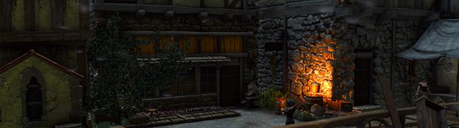

General information about the game The Witcher 3back to summary
If you use the mod Preparations, then Celandine is an important ingredient in your alchemy. You will use it to brew potions like the Swallow which provides good healing and bombs like Samun to blind your opponents.
Celandine, though, is not an herb you find everywere. And buying it at an herbalist may cost you a lot of crown, especially if you're a Witcher that relies on potions and bombs much.

If you don't want to buy it from an herbalist, there are a few known spots to gather
some Celandine. You won't find many, but going there from time to time may be enough
to create a constant supply of Celandine.
The field new Tomira's hut in White Orchard for all sorts of herbs. Here, and around
the hut you will find